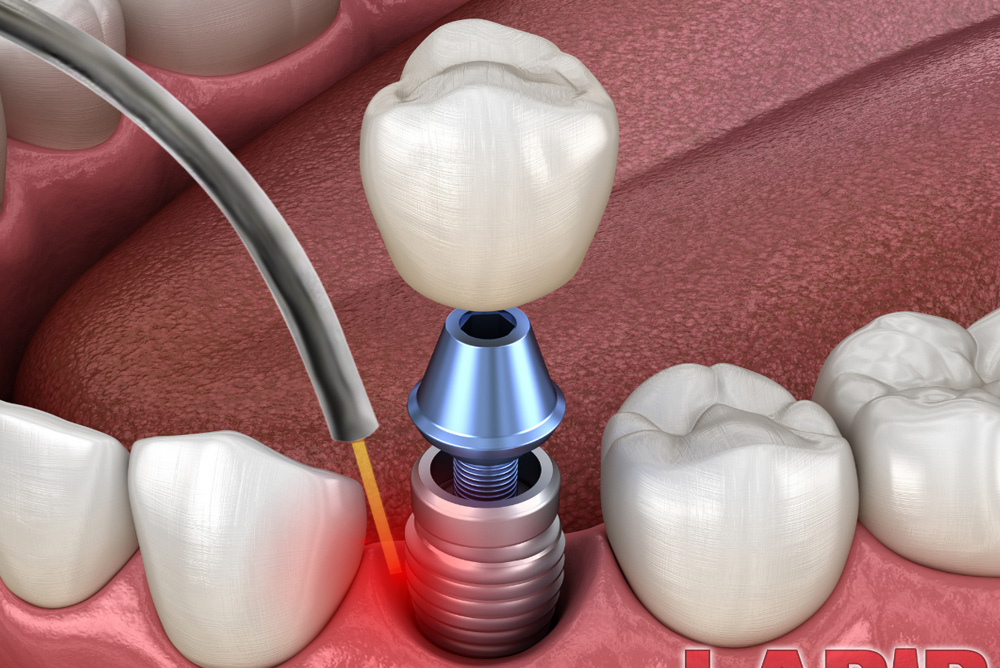

Our Best Dental Service
Bringing Confidence Through Exceptional Dentistry

Laser Assisted New Attachment Procedure (LANAP)
This procedure is clinically and histologically proven to regenerate new root surface (cementum), new ligament, and new bone. more details

Bone Grafting
A dental bone graft is a procedure performed to increase the amount of bone in a part of the jaw where bone has been lost or where additional support is needed.

Crown Lengthening
Excess gum and bone tissue are reshaped to expose more of the natural tooth, whether for one tooth to even the gum line. more details

Dental Implant
Utilizing cone-beam CT-scan (CBCT) technology, Dr. Petrov ensures precise implant placement with minimally invasive procedures more details

Tooth Extraction
Depending on the severity of your periodontal (gum) disease, tooth extraction may be necessary in advanced stage.

Wilckodontics/PAOO
This surgical stimulation increases bone remodeling and induces the regional acceleratory phenomenon (RAP), facilitating rapid tooth movement. more details
Treatment of Gum Recessions
Gum recession presents more than just a cosmetic concern, potentially leading to heightened sensitivity and tooth loss. Advanced recession treatments, such as gum grafting with allografts like Puros® Dermis and AlloDerm, offer groundbreaking solutions. more details

Salivary Diagnostic (Oral DNA)
Oral DNA tests in salivary diagnostics for periodontal health assess three critical parameters: pathogen detection, genetic susceptibility, and inflammatory markers. more details
Periodontal pocket reduction therapy/Laser Assisted New Attachment Procedure (LANAP)
 Dr. Sofia Petrov recommends LANAP for patients with deep periodontal pockets that impede proper cleaning. The LANAP protocol is the only laser periodontitis treatment protocol that has the US FDA clearance for periodontal regeneration ( true regeneration ) of the attachment apparatus around teeth. This procedure is clinically and histologically proven to regenerate new root surface (cementum), new ligament, and new bone. Dr.Petrov received intensive training in the LANAP and LAPIP protocol by the Institute for Advanced Laser Dentistry. The surgery is performed with the sole laser specifically designed for the LANAP protocol, the PerioLase MVP-7. There is no cutting or needing stitches with this protocol. Compared to traditional periodontal surgery, patients typically report less pain and discomfort during and after the procedure.
This patient friendly procedure helps get their gums healthy again comfortably and without fear. Dr. Petrov's preference for LANAP™ reflects its efficacy in managing periodontal disease while prioritizing patient comfort and oral health. Click here to view Institute For Advaned Laser Dentistry LANAP Protocol - laser gum disease treatment video.
Dr. Sofia Petrov recommends LANAP for patients with deep periodontal pockets that impede proper cleaning. The LANAP protocol is the only laser periodontitis treatment protocol that has the US FDA clearance for periodontal regeneration ( true regeneration ) of the attachment apparatus around teeth. This procedure is clinically and histologically proven to regenerate new root surface (cementum), new ligament, and new bone. Dr.Petrov received intensive training in the LANAP and LAPIP protocol by the Institute for Advanced Laser Dentistry. The surgery is performed with the sole laser specifically designed for the LANAP protocol, the PerioLase MVP-7. There is no cutting or needing stitches with this protocol. Compared to traditional periodontal surgery, patients typically report less pain and discomfort during and after the procedure.
This patient friendly procedure helps get their gums healthy again comfortably and without fear. Dr. Petrov's preference for LANAP™ reflects its efficacy in managing periodontal disease while prioritizing patient comfort and oral health. Click here to view Institute For Advaned Laser Dentistry LANAP Protocol - laser gum disease treatment video.
Dental Implants
Dr. Sofia Petrov, an expert periodontist and implant specialist, provides advanced dental implant solutions for missing teeth. Utilizing cone-beam CT-scan (CBCT) technology, Dr. Petrov ensures precise implant placement with minimally invasive procedures. Her practice integrates growth factor technology such as Platelet-Rich Plasma (PRP), Platelet-Rich Fibrin (PRF), and Emdogain for accelerated bone healing and enhanced comfort during treatment. Services include same-day implant rehabilitation, single-tooth implant crowns, and full-arch solutions, customized based on individual needs following a thorough assessment.
Wilckodontics/PAOO
Dr. Sofia Petrov, a board certified periodontist, offers Periodontally Accelerated Osteogenic Orthodontics (PAOO) treatment. PAOO, also known as Surgical Facilitated Orthodontic Treatment (SFOT), is a surgical procedure performed at the start of orthodontic treatment. This surgical stimulation increases bone remodeling and induces the regional acceleratory phenomenon (RAP), facilitating rapid tooth movement. PAOO/SFOT accelerates orthodontic treatment 2-3 times and simultaneously prevents future recessions by incorporating bone augmentation. Many patients choose PAOO/SFOT treatment to expedite their orthodontic journey while preserving oral health.
Crown Lengthening Procedures
Crown lengthening, performed by Dr. Petrov for both functional and aesthetic purposes, employs conservative approaches to ensure highly predictable aesthetic outcomes. In esthetic crown lengthening, excess gum and bone tissue are reshaped to expose more of the natural tooth, whether for one tooth, to even the gum line, or to reveal a broader smile across several teeth. Dr. Petrov utilizes minimally invasive techniques to ensure highly cosmetic results. It's important to note that in cases where clinical crown lengthening is not performed, impinging on the biological width can lead to chronic inflammation around crowns placed too close to the bone.
Scaling/Root Planing
Dr. Petrov utilizes the Millenium PerioLase MVP-7 laser for periodontal Scaling/Root planing, ensuring patient comfort and rapid recovery. This laser is specifically designed to target periodontal disease, precisely removing diseased tissue while sterilizing the area and promoting healing and regeneration. Importantly, the laser only affects soft tissue, leaving hard structures like teeth and implants unaffected. In many cases, local anesthesia may not be required due to the minimally invasive nature of laser therapy. Furthermore, the use of laser therapy minimizes recession of the gum tissue, preserving the overall aesthetics of the smile.
Treatment of peri-implantitis (periodontal disease around dental implants) LAPIP
Dr. Petrov employs laser-assisted treatment, specifically LAPIP (Laser Assisted Peri-Implantitis Protocol), for failing dental implants. Peri-implantitis is often initiated by microorganisms residing on the implant surface, forming a biofilm that triggers harmful inflammatory responses and inhibits bone cell reattachment. When addressing this condition, it's crucial to eliminate inflamed tissue and decontaminate the infected implant surface. Utilizing laser technology, Dr. Petrov can precisely remove infected tissue and vaporize bacteria deep within the implant pocket while preserving healthy tissue for regeneration. This approach effectively halts disease progression and can even stimulate new bone growth in some cases. Compared to traditional extensive surgery, patients typically experience less discomfort with LAPIP, making it a preferred choice for treating peri-implantitis. Dr. Petrov has undergone extensive training and is certified by the Institute for Advanced Laser Dentistry in the LAPIP protocol, demonstrating expertise in treating ailing and failing dental implants using laser-assisted techniques.
Treatment of Gum Recessions
Dr. Petrov evaluates the extent of gum recession and the quality of the gums in the affected area, discussing potential causes to prevent recurrence. Treatment options, including connective tissue grafts, free gingival grafts (using the patient's own tissue), and allografts (using donor tissue), are explored. Dr. Petrov may supplement the procedure with PRP/PRF/Emdogain technology for enhanced outcomes. Gum recession presents more than just a cosmetic concern, potentially leading to heightened sensitivity and tooth loss. Advanced recession treatments, such as gum grafting with allografts like Puros® Dermis and AlloDerm, offer groundbreaking solutions. Soft tissue allografts, derived from human dermal tissue, provide strength and resilience against oral bacteria. With a proven track record of root coverage, they are ideal for significant gum recession. Additionally, allografts enhance the stability of gums surrounding dental implants, ensuring secure placement and optimal functionality. Allografts offer advantages such as single-site surgery, eliminating the need for tissue harvesting from the patient's mouth. This reduces surgical complexity and post-operative complications, leading to a more comfortable recovery with fewer dental visits.
Salivary Diagnostics (Oral DNA)
Oral DNA tests in salivary diagnostics for periodontal health assess three critical parameters: pathogen detection, genetic susceptibility, and inflammatory markers. By identifying specific bacteria responsible for periodontal disease, evaluating genetic markers that indicate a patient's risk of developing such conditions, and measuring inflammation levels through cytokines, these tests provide a comprehensive overview of an individual's oral health status. This approach enables dental professionals to tailor prevention and treatment strategies effectively, offering personalized care based on the unique risk factors and current state of each patient's periodontal health.
Platelet-Rich Plasma and Platelet-Rich Fibrin Therapies
PRP and PRF Therapies
PRP and PRF Therapies enhance recovery following dental surgery by leveraging the body's inherent healing capabilities. Platelets, which are cells involved in blood clotting, also release growth factors (GFs) that activate stem cells to produce new tissue. By concentrating these platelets, PRP and PRFTherapies significantly boost the amount of growth factors at the injury site, promoting quicker tissue regeneration and healing.
Procedure:
A small blood sample is taken from the patient. The blood is processed in a centrifuge to concentrate the platelets. This concentrated platelet sample, containing up to five times the normal amount of growth factors, is applied to the surgical area.
Overall Benefits:
Faster healing and improved tissue regeneration. Reduced pain and inflammation. Lower risk of infection and complications. Enhanced bone and soft tissue healing.